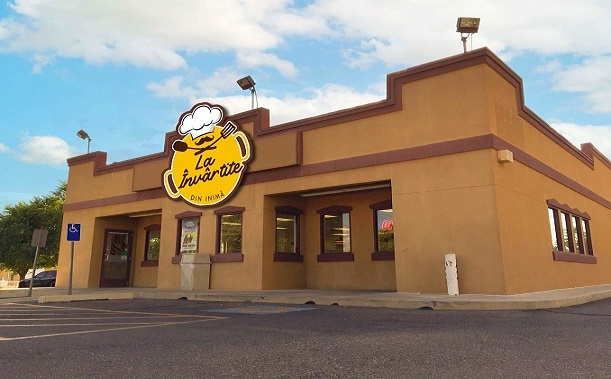

Order with Glovo
Order with GlovoAbout us
|  | "La Învârtite” is a commercial brand in the Republic of Moldova, published in 2003, which of the first years of existence, has become one of the leaders on the national market and has been placed among companies with high development dynamics. |
| The success of the "La Învârtite” is due to the process of qualitative selection of the products and the competent achievement of the content of the menu. All the dishes have a unique taste, the secret of which consists in their preparation process. The "La Învârtite” franchise not only became a prosperous company, but also a symbol of quality. |  |
 |
The design of restaurants is made in such a way as to create a modern, warm, comfortable and at the same time embody the elegance of the "big city". "La Învârtite” is an ideal place for business meetings and meetings with friends, families with children, and for sentimental conversations, it is the choice of all ages. |


 +373 022-12-12-12
+373 022-12-12-12